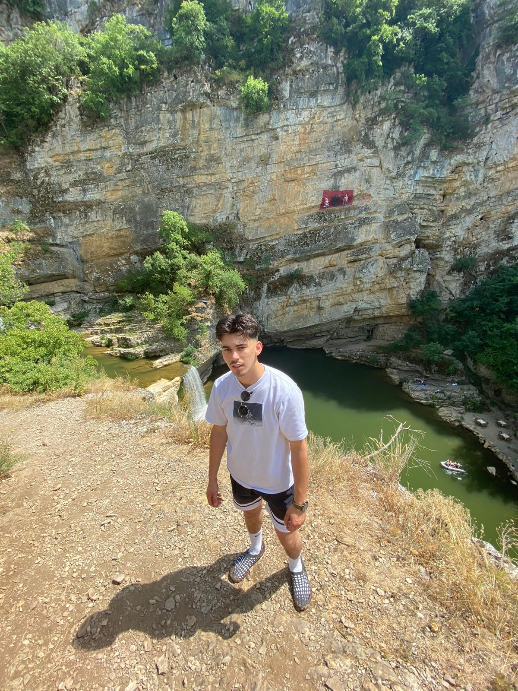
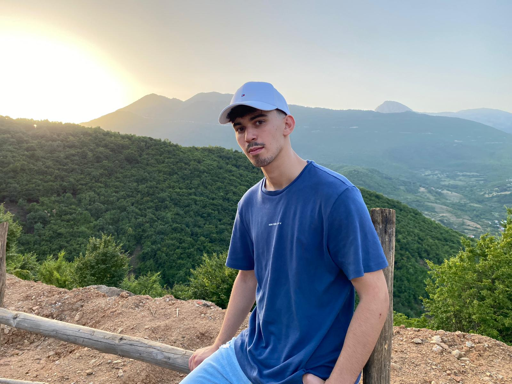
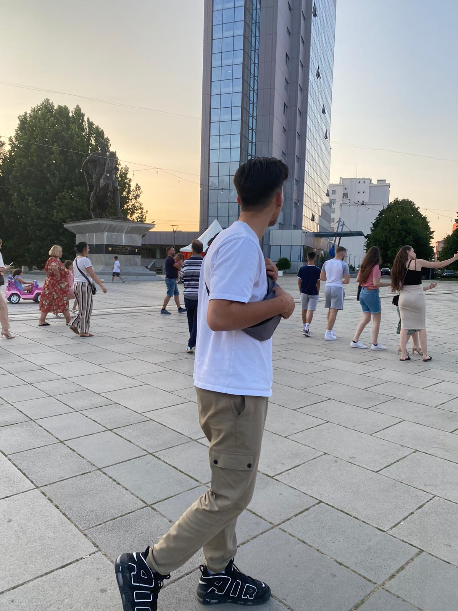
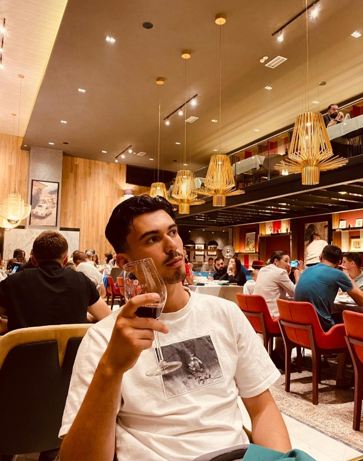
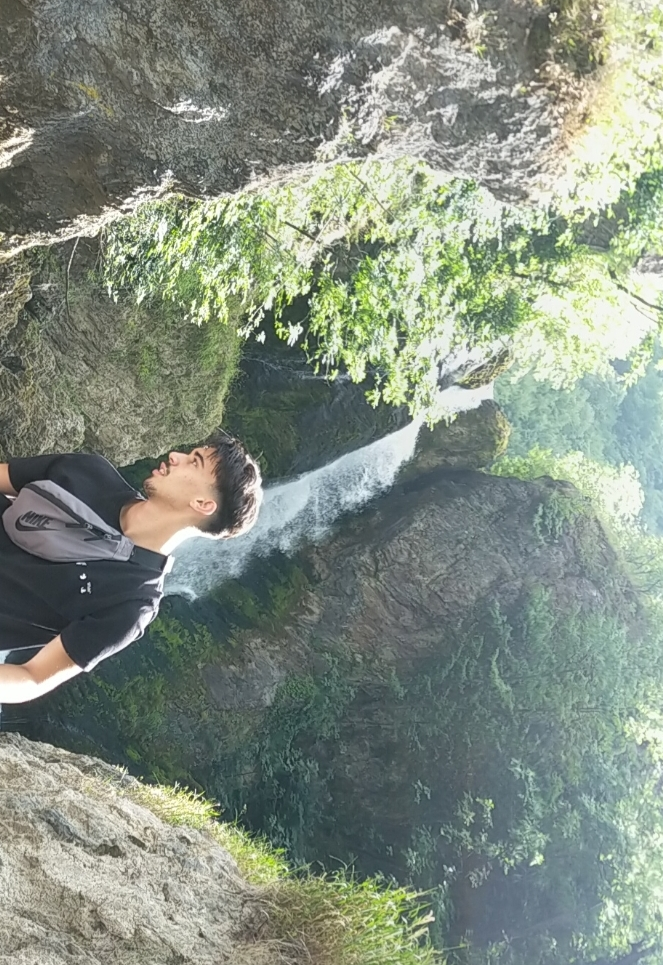
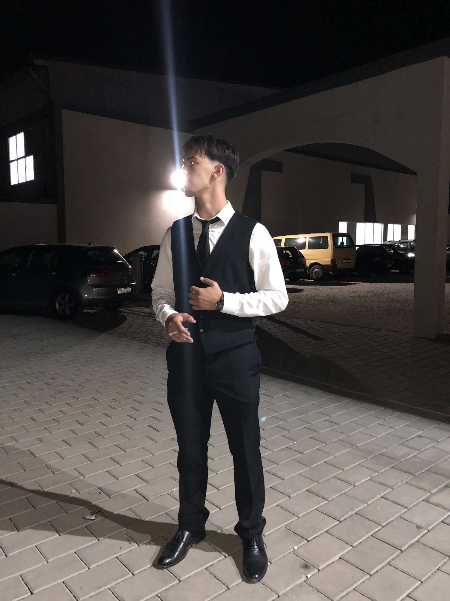
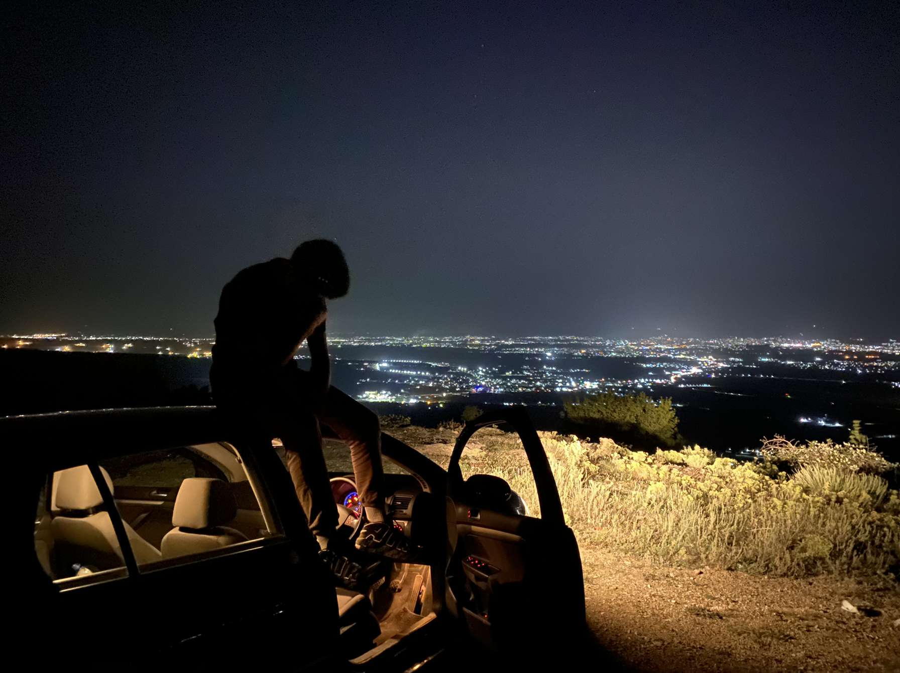

What's going on right now

Well, where do I start? Let me start with education. I am currently studying Journalism, Media and Publishing at Oxford Brookes University (second year). Trying to make that whole thing work. I do enjoy my course but sometimes life gets stressful and doesn't let you enjoy the important things.
When I am not burying my head in books I am kind of holding down three jobs all at once. I work on railway for the cash, I am a Indie Rock band manager, and I've started my media page on instagram. Sounds like a lot? It is.
What the future holds

Can't really answer this one to be honest. I can tell you my goals though. My goals are to go big with my media page, like Vice big. Making interesting content is a passion for me. It's all about creating a big story from a little scoop. I want to show the world my eagerness for equality and humour to the world. Oh, and also I want to make sure that the people in power deserve to be there, and if they are not I do not have a problem with bringing them down through my creativty.
My Passions

Kind of dealt with this one in the last section but here goes nothing. One great passion of mine is to have my closest friends and family with me on my way to success and make them part of my story. I believe a good friendship circle is very important. Need helping hand when your in a tough spot? Your friends are there. However, don't get me wrong you need to have the right friends and you need to distuinguish who are your friends and who are your associates.
I also have a great passion, and sort of a hobby for exploring natures finest spots and diving straight in. I mean this literally too, as the below video shall show...
Side Hustle

My main side hustle right now is my media page on instagram, I've just started but I'm looking forward to the future. It's called KOSZ media. With a catchy/cringey slogan: Why? Just KOSZ. Yes I know very creative. Thank you very much
I also plan to start a little business this summer. I want to start up my little coffee shop for locals. I've thought about almost everything and also have a location in mind. So yeah, hopefully all goes well.
Here's a random splash of photos of me and my adventures of Summer 2021.
      Under this is my media page acount, which you should follow if you want good luck for an eternity! So click on the instagram icon below and get following! Currently only on instagram but hope to expand soon!